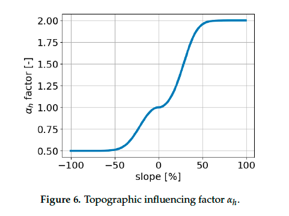

Slope's Effect on Rate of Spread
All competent simulations of fire spread must consider the effect of local topography on a fire's local rate of spread (\(RoS\)).
Rothermel
The most classic consideration comes from Rothermel, 1972, eq 46:
Where \(R_S\) is rate of spread with slope accounted for, and \(R_0\) is rate of spread of a given fuel type on a flat plane. Reorganizing for \(R_S\):
This equation becomes useful, as \(R_0\) is empirically available for Andersen's 13 fuel types. The equation for \(\phi_S\) is given by Rothermel equation 51:
where \(tan(\theta)\) is the slope of the fuel bed in the direction of spread. \(tan(\theta)\) can also be computed simply as the rise over run between points \(a\) and \(b\). This is especially convenient, as computing \(x/y\) is orders of magnitude more computationally efficient than using the \(tan\) function. As Andrews, 2018 points out, "The fire model itself applies only to upslope spread." For this reason, Firestarter adapts this equation to also account for downhill slope. For simplicity, the equation becomes:
This means that a effects of positive and negative slope on \(RoS\) are exactly opposite of one another. Andrews, 2018 offers a more involved exposition on the interaction between uphill and downhill slope and wind, and the combinations thereof.
PROPAGATOR
A newer approach towards slope's affect on \(RoS\) comes from PROPAGATOR, 2020. Similar to Firestarter, Propagator takes a cellular automata approach to fire spread modeling. But rather than use \(RoS\) directly, it checks the probability that fire will spread from one cell to another. The baseline probability \(\rho_0\) is derived from the fuel type. The effect of wind and slope on \(\rho\) is given by
where \(e_m\) is a constant related to fine fuel moisture content, and \(\alpha_{ws}\) is simply \(\alpha_{s} * \alpha_{s}\). \(\alpha_{s}\) as a function of \(s\) is not given, but its graph is present:

The equation is not given, but some careful experimentation
(Google graph here.) In this case, the effect of negative slope on probability of spread is not simply the negative of the effect of that same positive slope. This model is probably more realistic an application of slope. However, as this is a probability based model, adapting this to an \(RoS\) based model must still be done.